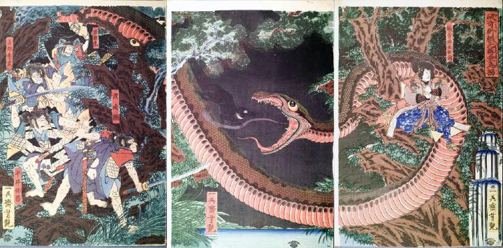

大蛇。体が非常に長く、2本の大木に跨って絡まっている。鱗は茶色く、蛇腹は赤みがかっている。目玉は大きい。大きく開いた口には鋭い牙が並んでいる。自身の体を昇って走ってきた黒犬に対して、喉の奥から霧のようなものを吹きつけている。蛇ののど元あたりにかかった枝に、盗賊袴垂保輔が両手で印を結んで座っている。彼が大蛇を操っているようである。
著作者：一英齋芳艶（歌川芳艶）／出典：親書誌：U426_nichibunken_0133：破奇術頼光袴垂為搦；キジュツヲヤブッテヨリミツハカマダレヲカラメントス／日付：2009／資源識別子：U426_nichibunken_0133_0001_0000
Copyright (c)2010- International Research Center for Japanese Studies, Kyoto, Japan. All rights reserved.